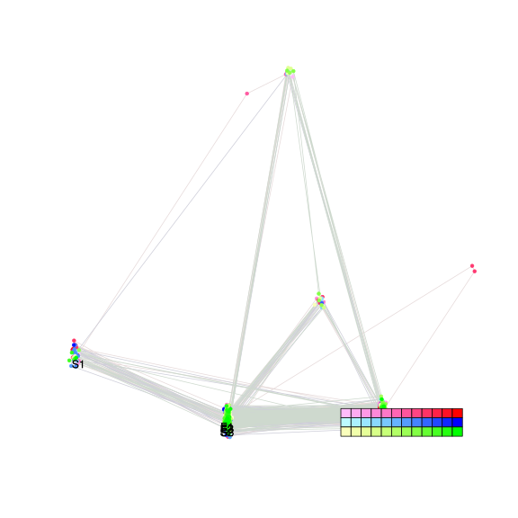
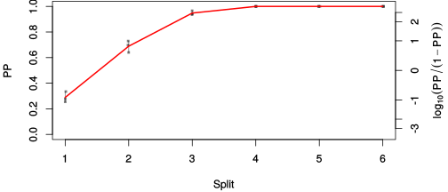
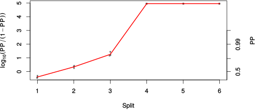

| chain # | burnin | subsample | Iterations (remaining) | command line | subdirectory | directory |
|---|---|---|---|---|---|---|
| 1 | 10000 | 1 | 90000 | bali-phy E1_AA_red3_v2_Manatees_BetaGamma.fas -s 85946 -n Manatees_BetaGamma_c1 | Manatees_BetaGamma_c1-1 | /DATA/work/ONCOGENEVOL/database/trees/Bali-Phy/E1 |
| 2 | 10000 | 1 | 90000 | bali-phy E1_AA_red3_v2_Manatees_BetaGamma.fas -s 26354 -n Manatees_BetaGamma_c2 | Manatees_BetaGamma_c2-1 | /DATA/work/ONCOGENEVOL/database/trees/Bali-Phy/E1 |
| 3 | 10000 | 1 | 90000 | bali-phy E1_AA_red3_v2_Manatees_BetaGamma.fas -s 25831 -n Manatees_BetaGamma_c3 | Manatees_BetaGamma_c3-1 | /DATA/work/ONCOGENEVOL/database/trees/Bali-Phy/E1 |
| P(data|M) = -9118.908 +- 0.614 | Complete sample: 11 topologies | 95% Bayesian credible interval: 3 topologies |

Phylogeny Distribution

| Partition support: Summary |
| Partition support graph: SVG |
| 50% consensus | Newick (+PP) | SVG | |||||
| 66% consensus | Newick (+PP) | SVG | |||||
| 80% consensus | Newick (+PP) | SVG | |||||
| 90% consensus | Newick (+PP) | SVG | |||||
| 95% consensus | Newick (+PP) | SVG | |||||
| 99% consensus | Newick (+PP) | SVG | |||||
| 100% consensus | Newick (+PP) | SVG | |||||
| MAP | Newick (+PP) | SVG | |||||
| greedy | Newick (+PP) | SVG |
{kind=link}
{kind=link}
{kind=link}
{kind=link}
{kind=link}
{kind=link}
{kind=link}
{kind=link}
Alignment Distribution
Partition 1
| Diff | Min. %identity | # Sites | Constant | Informative | ||||
|---|---|---|---|---|---|---|---|---|
| Initial | FASTA | HTML | Diff | 4.4% | 628 | 1 (0.159%) | 285 (45.4%) | |
| Best (WPD) | FASTA | HTML | AU | 33.9% | 731 | 101 (13.8%) | 334 (45.7%) |


Mixing
| burnin (scalar) | ESS (scalar) | ESS (partition) | ASDSF | MSDSF | PSRF-CI80% | PSRF-RCF |
|---|---|---|---|---|---|---|
| 2937 | 53.19 | 211.639 | 0.017 | 0.045 | 1.001 | 1.003 |
Projection of RF distances for the first 3 chains3D | Variation of split PPs across chains |
Scalar variables
| Statistic | Median | 95% BCI | ACT | ESS | burnin | PSRF-CI80% | PSRF-RCF |
|---|---|---|---|---|---|---|---|
| prior | -675.8 | (-739.2, -621) | 105 | 2571 | 1467 | 0.9997 | 0.992 |
| prior_A1 | -664.3 | (-725.4, -610) | 95.28 | 2833 | 1534 | 0.9996 | 0.9905 |
| likelihood | -9078 | (-9116, -9038) | 106.4 | 2537 | 321 | 0.9996 | 0.9863 |
| logp | -9754 | (-9799, -9714) | 97.5 | 2769 | 1069 | 1.001 | 1.002 |
| Heat.beta | 1 | ||||||
| Scale1 | 2.985 | (1.374, 5.426) | 1.009 | 267624 | 136 | 0.9997 | 0.9987 |
| S1.F.pi.A | 0.06792 | (0.05786, 0.07834) | 8.665 | 31159 | 182 | 1 | 1.001 |
| S1.F.pi.R | 0.04835 | (0.03979, 0.05714) | 8.085 | 33396 | 314 | 0.9996 | 0.9945 |
| S1.F.pi.N | 0.04108 | (0.03391, 0.0485) | 8.229 | 32812 | 327 | 1.001 | 1.001 |
| S1.F.pi.D | 0.06212 | (0.05204, 0.07263) | 9.486 | 28464 | 338 | 1.001 | 1.001 |
| S1.F.pi.C | 0.04181 | (0.03228, 0.05198) | 8.319 | 32457 | 307 | 1 | 0.9989 |
| S1.F.pi.Q | 0.04185 | (0.0346, 0.04953) | 12.01 | 22488 | 165 | 1 | 0.999 |
| S1.F.pi.E | 0.05714 | (0.04837, 0.06611) | 28.06 | 9621 | 237 | 1 | 0.9989 |
| S1.F.pi.G | 0.06141 | (0.05007, 0.07358) | 11.63 | 23223 | 483 | 1 | 0.9944 |
| S1.F.pi.H | 0.02196 | (0.01654, 0.02788) | 8.429 | 32031 | 643 | 1 | 1.002 |
| S1.F.pi.I | 0.0473 | (0.03888, 0.05615) | 7.836 | 34456 | 127 | 0.9999 | 0.9971 |
| S1.F.pi.L | 0.1063 | (0.09261, 0.1205) | 7.871 | 34301 | 200 | 1 | 1.003 |
| S1.F.pi.K | 0.04582 | (0.03794, 0.05456) | 8.196 | 32942 | 314 | 0.9997 | 0.9989 |
| S1.F.pi.M | 0.01916 | (0.01413, 0.02432) | 8.056 | 33516 | 237 | 1 | 0.9965 |
| S1.F.pi.F | 0.05311 | (0.04337, 0.06348) | 8.26 | 32689 | 285 | 1.001 | 0.9983 |
| S1.F.pi.P | 0.04343 | (0.03433, 0.05309) | 8.812 | 30640 | 259 | 1 | 0.9986 |
| S1.F.pi.S | 0.07335 | (0.06317, 0.08369) | 9.892 | 27295 | 278 | 1 | 1.002 |
| S1.F.pi.T | 0.05866 | (0.04977, 0.06814) | 7.988 | 33802 | 173 | 1 | 1.003 |
| S1.F.pi.W | 0.01265 | (0.007642, 0.01847) | 8.127 | 33220 | 708 | 0.9998 | 0.9957 |
| S1.F.pi.Y | 0.02955 | (0.02235, 0.03733) | 8.138 | 33179 | 456 | 0.9996 | 1.003 |
| S1.F.pi.V | 0.06422 | (0.05417, 0.07471) | 25.23 | 10701 | 394 | 0.9998 | 0.9984 |
| I1.RS07.meanIndelLengthMinus1 | 2.006 | (1.41, 2.707) | 744.7 | 362 | 348 | 1 | 0.9993 |
| I1.RS07.logLambda | -3.884 | (-4.125, -3.631) | 30.25 | 8926 | 262 | 1 | 0.9979 |
| |A1| | 713 | (689, 733) | 5076 | 53 | 2937 | 0.9767 | 0.9997 |
| #indels1 | 82 | (74, 91) | 141.7 | 1906 | 606 | 0.8824 | 0.9905 |
| |indels1| | 248 | (216, 283) | 1107 | 243 | 1590 | 0.9773 | 0.9956 |
| #substs1 | 1558 | (1535, 1578) | 2246 | 120 | 145 | 0.9767 | 0.9991 |
| Scale1*|T| | 3.34 | (3.156, 3.53) | 5.815 | 46432 | 81 | 1 | 1 |
| |A| | 713 | (689, 733) | 5076 | 53 | 2937 | 0.9767 | 0.9997 |
| #indels | 82 | (74, 91) | 141.7 | 1906 | 606 | 0.8824 | 0.9905 |
| |indels| | 248 | (216, 283) | 1107 | 243 | 1590 | 0.9773 | 0.9956 |
| #substs | 1558 | (1535, 1578) | 2246 | 120 | 145 | 0.9767 | 0.9991 |
| |T| | 1.119 | (0.4867, 1.936) | 1 | 270003 | 113 | 1 | 0.9988 |